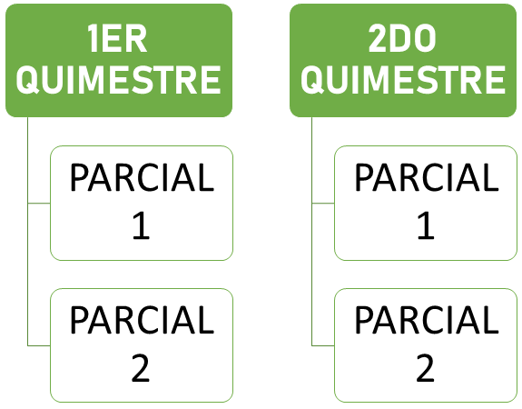

REGISTRO DE CALIFICACIONES EN EXCEL (PROCESO)
Nuestro proyecto se desarrolla principalmente para la organización y la visualización clara y concisa de las calificaciones, ya sea de escuela, colegio, universitarios, cualquier entidad que
tenga la necesidad de registrar progresos, puede ser muy útil también para empresas, todo esto solo nos lleva a un solo término "PLANIFICACIÓN". En este caso nos vamos a basar en un sistema de un colegio, para ser específicos nos basamos en el plantel "SOFOS"


REQUISIOS Y OBJETIVOS A COMPLETAR
El proyecto debe ser completo, basado desde el comienzo del año lectivo hasta el final de este, lo principal es automatizar los Promedios, Porcentajes, Notas Finales.
Los requerimientos del proyecto son
- OBTENER CALIFICACIONES DE PRIMER Y SEGUNDO PARCIAL
- OBTENER CALIFICACIONES DE PRIMER Y SEGUNDO QUIMESTRE
- COMPROBAR SI EL ESTUDIANTE APROBÓ EL AÑO LECTIVO
- COMPROBAR SU PROMEDIO FINAL POR MATERIA
- VISUALIZAR SU CALIFICACIÓN DE PASE DE AÑO
Este proyecto va dirigido principalmente a facilitar y agilizar el trabajo de los docentes, actualmente el colegio cuenta con una plataforma llamada IDUKAY pero en el caso de que esta falle o en el caso de no tener acceso a internet, esta plantilla podría servirles y ser de gran ayuda para tener organizadas las calificaciones de sus estudiantes.
También a los estudiantes para mostrar como funciona el proceso de calificaciones y promedios.
También a los estudiantes para mostrar como funciona el proceso de calificaciones y promedios.